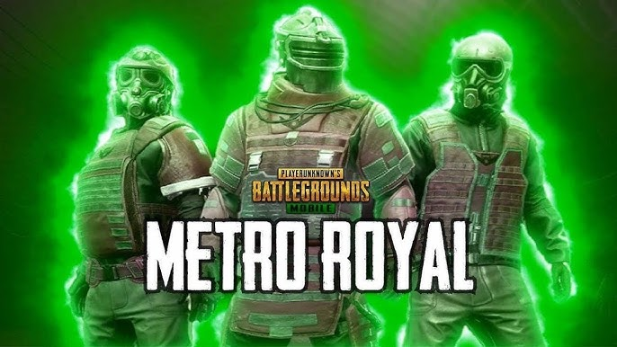

Суть гри полягає в тому що гравці попадають на безлюдний острів під назвою Ерангель.Задача гравців знаходити зброю і змагатися між собою.Переможець той хто залишиться останнім і виживе. Одна з найважливіших механік гри є так звана "синя зона" а також "червона зона".Синя зона не дає гравцям довго залишатися в одній точці з чяасом вона зменшується змушуючи гравців зсуватись в її центр що призводить до сутичок між гравцями.А червона зона ,або як її ще називають:"авіа удар" представляє з себе невелике місце в яке часто падають бомби з нема тому гравці стараються її уникати.Одним з полегшень для гравців є різного роду лікарства які розкидані по всьому острові,вони бувають різні до прикладу:аптечки,бинти,енергетики,знебольючі.А також у гравців є можливість переміщатись по острову за допомогою транспорту який також розкиданий по всюду але в невеликій кількості,серед транспорту зустрічаються:УАЗ,Couper BR- якого гравці називають мандаринкою,Бігфути,Баггі,Дача та інші...Також у пабгу велике різноманіття ігрових режимів таких як:WOW-це ирежим де гравці самі створюють всою карту і правила гри,Класичний-це всім відома королівська битва,А також найпопулярніший режим Metro Royale-про який ітиметься нижче.

Metro Royal один із найпопулярніших режимів в пабг мобайл. Появився він після колоборації пабгу і Metro Exotus, режим так сподобався гравцям що його вирішили добавити як постійник і кожені 2 місяця обновляти його.Metro карденально відрізняється він класичного режиму в пабгу,починаючи від зброї яка тепер може ломатися і має рідкості закінчуючи новими видами броні і картами.В метро добавили нові види броні 4,5,6 рівні і їх класи такі як:проста,кобра,стальний фронт.Усі вони дають який бафф до прикладу чим вищий рівень тим більше захисту ,а от кобра легша і гравець з нею бігає щвидше, а от слаьний фронт наоборот важча але дає більше захисту.Зброю теж зачепили значні зміни.Уся зброя получила свою якість таку як:пошкодженна,відремонтована,ціла,покращена і вищої якості також є золота яка дає інші покращення які на ній написані.
обзор на гру